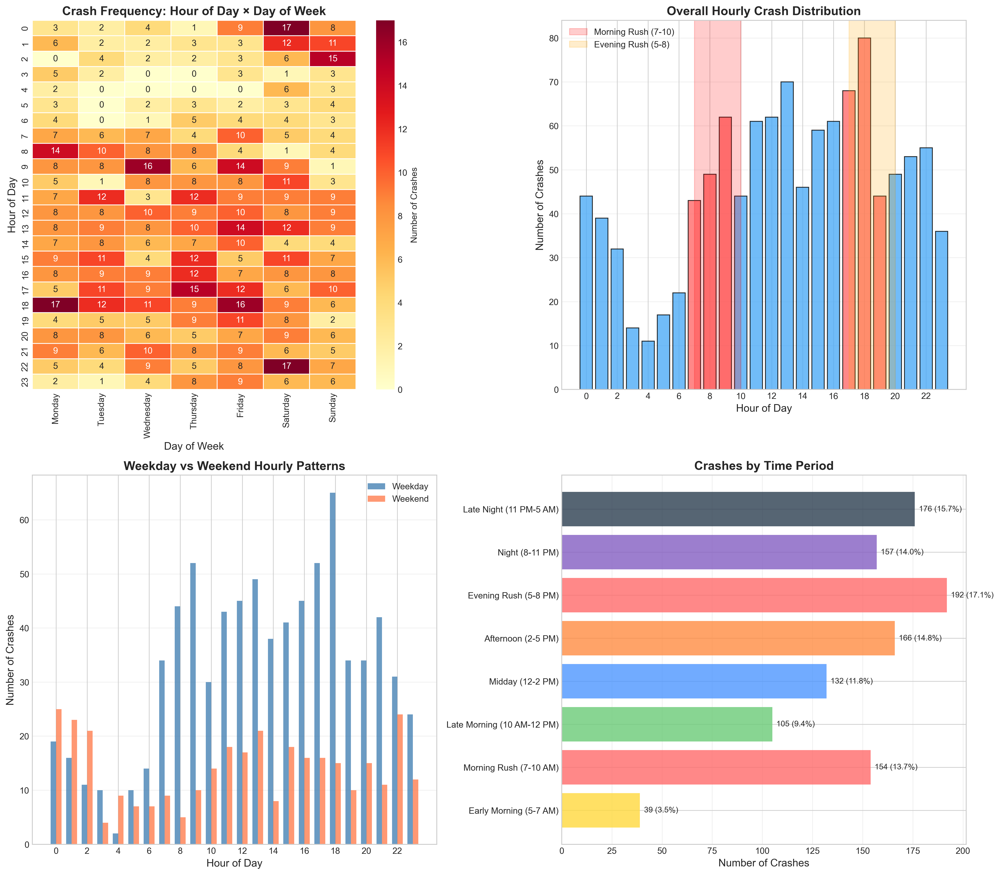
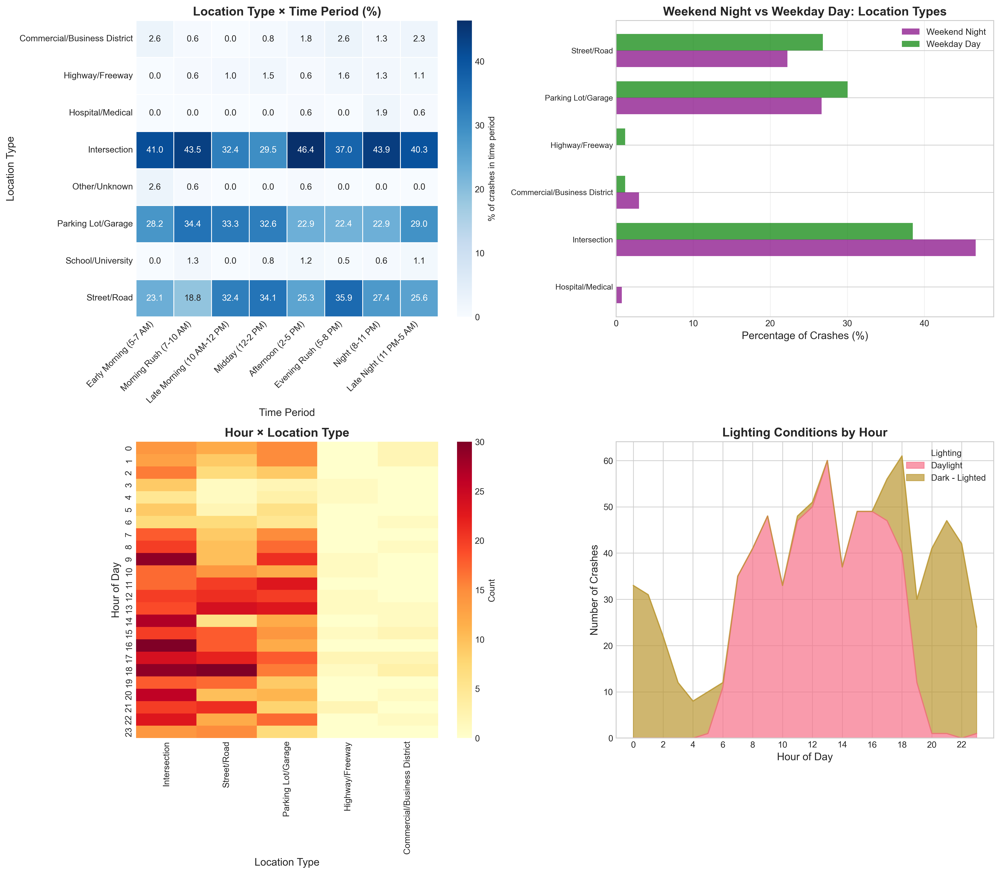

Click clusters to zoom in
A comprehensive analysis of autonomous vehicle incidents across five major U.S. cities reveals patterns in timing, location, and frequency.
Waymo operates autonomous vehicles in five major metropolitan areas across the United States.
Each circle marker represents a crash location. Clusters show areas with multiple crashes - click to zoom in.
1,100+ crashes analyzed
California hosts the majority of Waymo's operations. Notice the dense clusters around the San Francisco Bay Area.
The Bay Area's complex urban environment presents unique challenges for autonomous vehicles.
With ~45% of all crashes, San Francisco shows clear hotspots.
Zoom in to see individual crash locations on specific streets - notice concentrations in downtown, SoMa, and the Mission District.
Behind each marker is an individual incident. Let's focus on crashes with serious injuries - moderate, serious, or fatal.
Scroll to see the 8 most serious SF incidents...
These 8 markers represent all SF crashes with moderate, serious, or fatal injuries.
Click any marker to view:
Continue scrolling to explore patterns...
Enter your zipcode to find the nearest city with recorded Waymo crashes and see how far it is from you.
While individual incidents tell important stories, the aggregate data reveals systematic patterns in when and where crashes occur.
Let's examine the broader trends...
Our analysis examines crash reports from Waymo's autonomous vehicle fleet, uncovering trends that inform the ongoing conversation about self-driving car safety.

Temporal patterns reveal that autonomous vehicle crashes follow predictable rhythms tied to traffic volume and human behavior.
The heatmap shows crash frequency across each hour and day of the week. Darker red = more crashes.
Notice the concentration during weekday rush hours and the different pattern on weekends.
Weekdays show clear rush hour peaks at 7-9 AM and 5-7 PM.
Weekends have a flatter distribution with peaks shifting to late night hours (midnight-2 AM).

Location analysis reveals that crash sites vary by time of day, with different patterns for weekday business hours vs. weekend nights.
During weekend nights (8 PM - 3 AM), intersections account for 47% of crashes - higher than weekday averages.
This may relate to nightlife areas and different traffic patterns.
During weekday daytime, parking lot crashes increase to 30% of incidents - likely due to commercial activity and ride pickups/dropoffs.
Each city shows distinct peak crash times, reflecting different operational patterns and local traffic conditions.
526 crashes - Evening rush dominates
310 crashes - Similar evening pattern
208 crashes - Unique late-night peak
61 crashes - Evening rush pattern
Los Angeles uniquely peaks at midnight, while all other cities peak during evening rush hour. This suggests different operational patterns or nightlife-related demand in LA.
Watch crashes unfold across a 24-hour period with our interactive time-passage visualization.
Drag through time to see how crashes accumulate throughout the day. Filter by city or day type to explore patterns.
Crash data was compiled from Waymo's publicly reported incidents through the SGO (Standing General Order) reporting system and NHTSA filings.
Incident times were parsed from the 24-hour format field. Time periods were categorized into rush hour, daytime, evening, and late night segments.
Location types were extracted from crash narratives and addresses using pattern matching for intersections, parking areas, highways, and other categories.
Coordinates were approximated using city centroids with random offsets for visualization. The heatmap reflects relative crash density within each area.